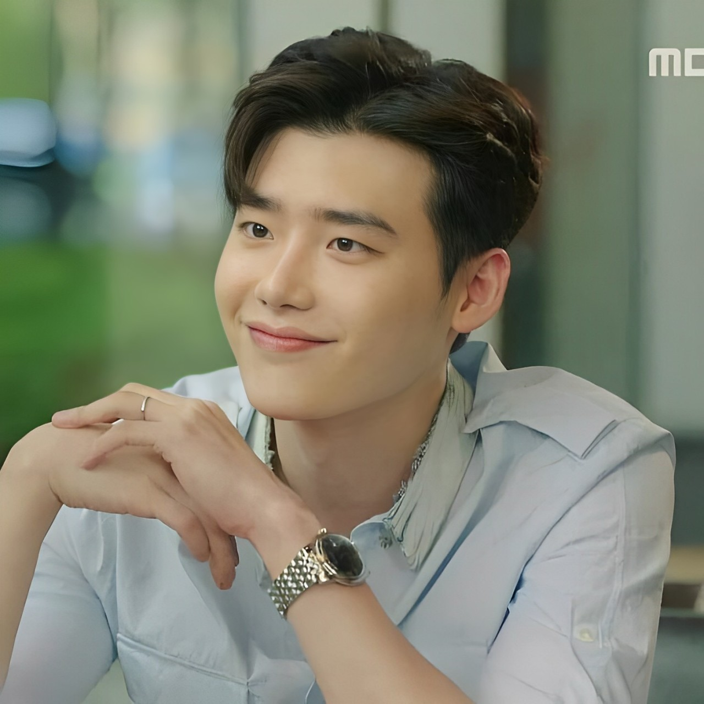

Kang Chul é um personagem do kdrama "W - Two Worlds". À
primeira vista, ele parece ser frio e misterioso, mas conforme a trama
se desenrola, revela um senso de humor único e
encantador.
Embora enfrente inúmeros desafios, um dos aspectos mais
cativantes de sua personalidade é a persistência inabalável diante das
adversidades. Sua determinação e resiliência não apenas moldam sua
jornada, mas também conquistam o coração do público, tornando-o um
personagem inesquecível.